Getting started with Survey Flow
Survey Flow sends a short satisfaction survey when a ticket reaches the status you choose, then collects the ratings and comments where your team can read them. This guide takes you from installing the app to reading your first results. Setup runs about ten minutes, and most of that is deciding what to ask rather than clicking through screens.
A note on the examples
This guide uses a service desk as its running example, because closing a ticket is the most common reason to ask someone how it went. Survey Flow is not limited to that. It runs on any board with a status column and an email address, so teams also use it after a deal closes, after a project handover, or at the end of an onboarding. Wherever you read ticket below, read item if that fits your board better.
Before you begin
Survey Flow works alongside a board you already run. Three things need to be true before it can do anything useful.
- Admin rights on your monday.com account. Only account admins can install apps, and only an admin can connect the account once it is installed. A board owner can use Survey Flow afterwards, but cannot make that first connection.
- A status column that marks work as finished. Most boards already have one, usually with a label like Done, Resolved, or Closed.
- A field holding the recipient's email address. Normally an email column, or the requester on tickets that arrive by form or email intake.
If the third one is missing, set it up first. Survey Flow has no way to reach a customer whose address it cannot find, and it will not guess.
1Install Survey Flow
In monday.com, click the apps icon in the top right and open the Apps marketplace. Search for Survey Flow, open the app page, then click Install and confirm which account you are installing into.

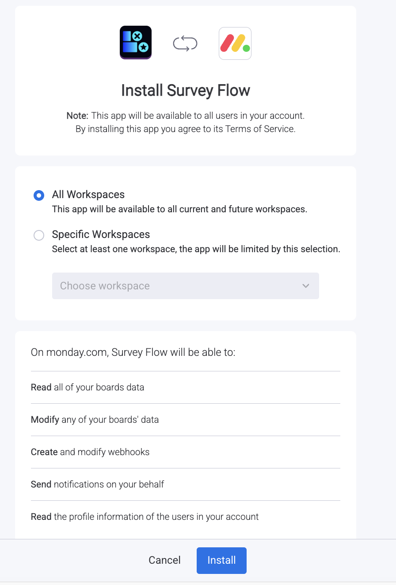
Installing adds Survey Flow to your account and nothing else. No survey reaches anyone until you build a configuration and switch it on, which happens in step 3.
2Authorize access
The first time you open Survey Flow, monday.com shows you exactly what the app is asking for. Survey Flow requests the narrowest set of permissions that lets it work. It reads board and item data so it can tell when a ticket changed status and who the customer is, and it writes back so results appear where you expect them.

Worth a moment
Read the list before approving. If anything on it looks wider than what is described here, stop and write to us rather than approving and asking afterwards.
Click Authorize and you land back in Survey Flow, ready to build a survey. If you later revoke this authorization, Survey Flow stops working straight away, and your data goes onto the same seven day clock an uninstall starts. See Before you uninstall.
Only an admin can connect the account
Connecting is the one step a board owner cannot do for you. Someone who is not an account admin opens Survey Flow and sees the welcome screen with no Connect button and a line telling them an admin needs to connect this account before surveys can be set up. Nothing is broken and there is nothing for them to fix; it is a job for whoever administers the account.
Worth knowing before you delegate the rollout, and worth knowing if a colleague reports that the app looks empty.
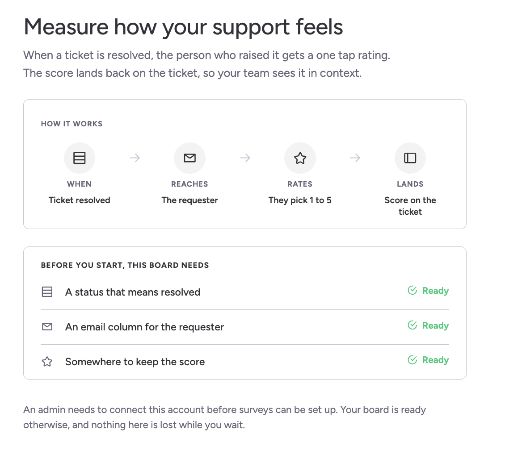
3Build your first survey
This is the part worth slowing down for. Everything that follows depends on these choices. Open Survey Flow and click Set up surveys.
The screen is in three labelled groups. Set up is what the app reads from your board and is the only part you have to complete. Refine your survey is the survey itself, and everything in it ships with a sensible default. Act on what comes back is what happens once a response arrives.
Above those groups you may also see a banner or two, and they are worth reading rather than dismissing: one appears when the account's authorisation has lapsed and needs reconnecting, and another names a column your configuration points at that has since been deleted from the board. A How it runs strip sits above them all, tracing the survey from the status that fires it to the person alerted about a low score, and it marks itself when something is misconfigured.
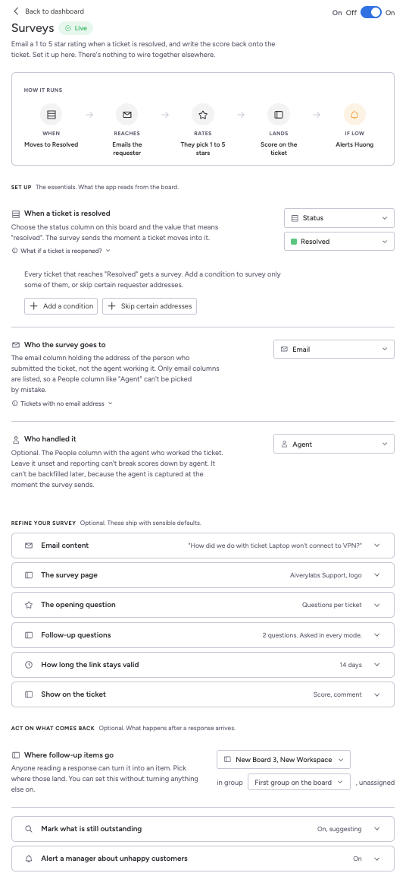
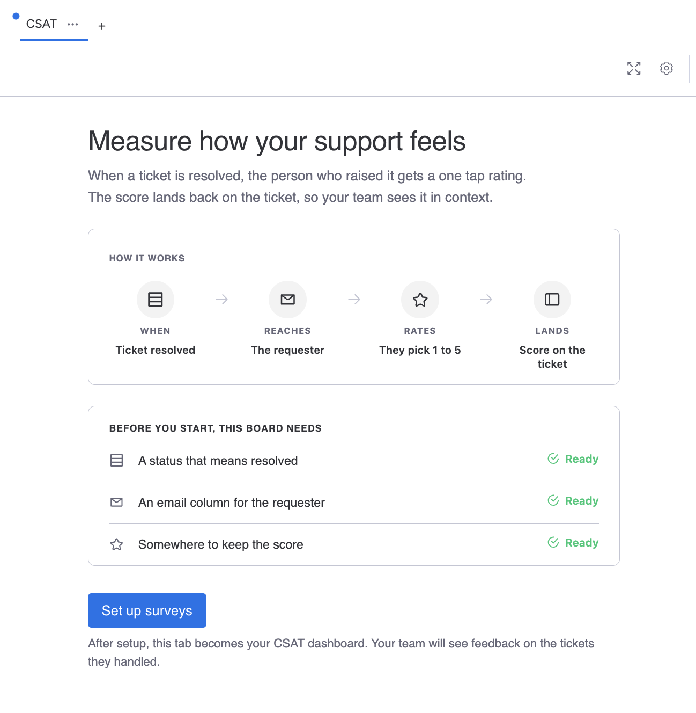
Which board it covers
There is no board picker to hunt for. You open Survey Flow from the board it applies to, so the board is decided by where you are standing when you open it.
One configuration covers one board. If you run several boards, set each one up separately. That is more clicks, but it lets each team ask its own questions.
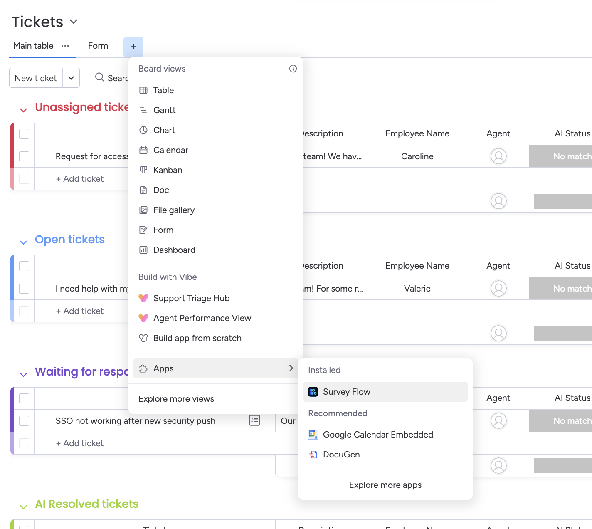
Pick the trigger status
Choose the status that means the ticket is finished from the customer's point of view. For most teams that is Done or Resolved.
Think twice about statuses like Waiting on customer or Pending review. A survey arriving at that moment reads as though you consider the matter closed when the customer does not.

Narrow it down with conditions
Not every resolved ticket deserves a survey. You can add up to three conditions, and only tickets matching all of them get one. Status, dropdown and people columns can all be used.
A common setup is to survey only tickets above a certain priority, or only real issues rather than routine requests, so you are not asking someone to rate a password reset.
Tickets that do not match are skipped entirely. Nothing is sent and nothing is recorded for them, so they never sit in your results as unanswered.
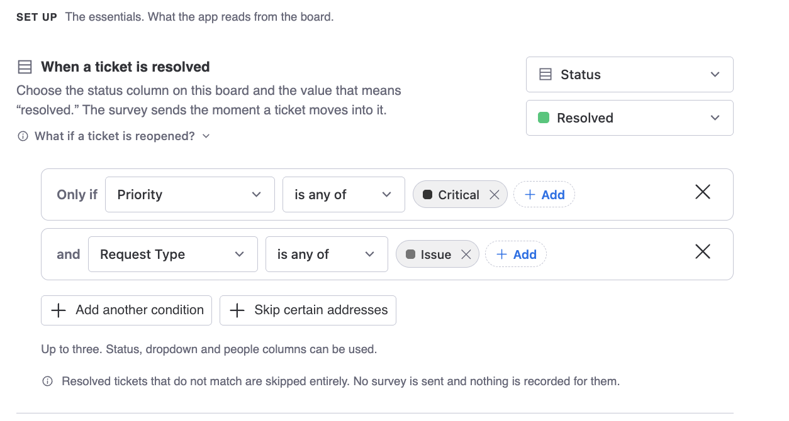
Point Survey Flow at the email address
Tell Survey Flow which field holds the customer's address. Depending on how your board is built, this is an email column or the requester on the ticket.
When that field is empty on a ticket, Survey Flow skips it quietly. Nothing sends and nothing errors. If a survey you expected never appeared, an empty address field is the first thing to check.
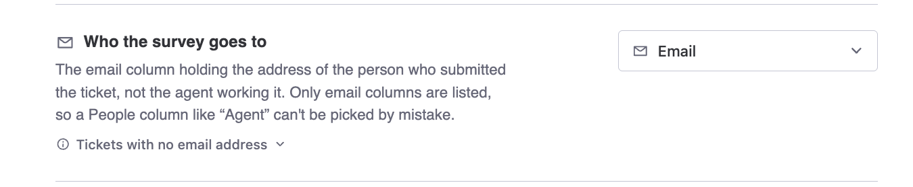
Who handled it
The third thing Survey Flow reads from your board is the people column holding whoever handled the ticket. That is what attributes a rating to an agent, and it is what the Team tab and the per agent views in step 6 are built from.
It is optional, and it is the one setting here you cannot fix in hindsight. The agent is captured at the moment a survey is sent, so leaving it unset does not merely postpone the breakdown — those responses can never be attributed afterwards. If your agent reporting is empty, check this first, and know that setting it now only helps from now on.
Write the questions
Every survey opens with a one to five star rating. That question is fixed, because it is the number every report is built from.
After the rating, every survey asks for a comment. That question comes with the survey rather than being one you add, and you can mark it required. It is the only thing besides the rating that a customer can be made to answer; everything else can be skipped, which is worth knowing before you design a survey that only pays off if somebody finishes it.
After the comment you can add up to four follow up questions. Four is the ceiling, not the target: keep the list short. Response rates fall away quickly past two or three questions, and a rating with no comment is still useful while an abandoned survey is not. A pattern that works well is one rating, then one open text box asking what would have made the experience better.
Each follow up question is one of three kinds: Short text, which is a free typing box, Choose one, or Choose multiple. The two choice kinds need a list of options from you. Reach for a choice kind when you already know the answers you are sorting between and want to count them, and for Short text when you do not, because it is the only kind that can tell you something you had not thought to ask about.

Show a question only to some raters
Each follow up question carries a Show this question to setting with three bands: Positive for four and five stars, Neutral for three, and Negative for one and two. Only raters in the bands you tick are asked it.
The obvious use is asking unhappy raters what went wrong without putting the same question to people who have just told you it went well.
One thing it does not do, despite appearances. The band decides who is asked. The dashboard's sentiment filter decides what you look at afterwards. That filter is worked out from the score by itself, and nothing anywhere records which band a question was aimed at.
The two agree because they use the same thresholds, not because they are connected. Filtering the feedback list to negative does show you the responses that saw your negative-banded questions, and it will keep doing that — by arithmetic on the score. It is worth knowing which of those two it is the moment you want to count how many people were actually asked a particular question.
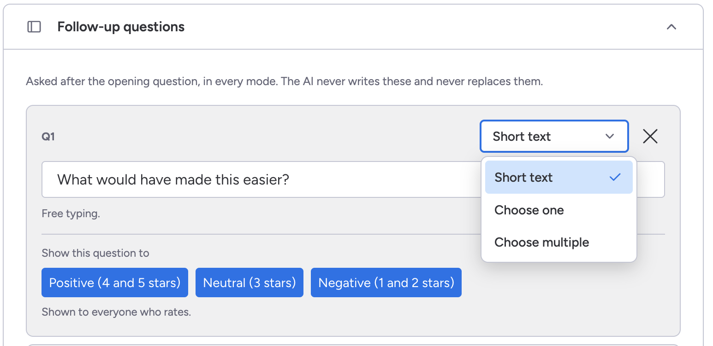
Let AI write some of the questions
Survey Flow can have AI write questions for the ticket in front of the customer. It adds questions. It never replaces yours. The follow up questions you wrote are asked in every mode, last, whatever the survey asks before them.
Where the setting is. Inside The opening question, in the Refine your survey group. There is no section called AI settings, and searching the screen for that phrase will not find it.
There are three modes, and the first is the default, so a board sends nothing to any model until somebody changes it.
- Fixed questions. The comment question, then the questions you wrote. Nothing is generated and nothing leaves your account.
- Ask more when needed. After the customer comments, the AI may ask one or two questions of its own. Then your questions.
- Questions per ticket. The opening question is written by AI for that particular ticket instead of being the same for everyone. After that it behaves exactly like the mode above.
The third mode is the second one plus a generated opening, not a separate feature, and they fall back in that order — three to two to one — rather than failing outright. A customer sees a shorter conversation, not an error.
That fallback is worth understanding before you pick the third mode. Your own per-band questions do not disappear when the AI writes the opening; they become what the customer is asked if a call fails or the account is out of AI credit. Keep them good. They are the reason a failure is invisible from the customer's side.
The AI does not ask on every response. It only asks after the customer has typed something, and only when what they wrote is too thin to act on. A clear, detailed comment gets no extra question at all.
What each call sends. A question asked during the conversation sends the ticket title, how many days the ticket took to close, the score, the comment exactly as written, your topics-to-avoid list, and the conversation so far. In the third mode the opening question is a separate call and sends the same things without the comment, because there is not one yet.
Topics to avoid is a list you supply, and it goes into both prompts. It is how you keep the AI off subjects you would rather it did not raise with your customers.
What it costs. Up to 0.9 of a monday AI credit for each question the AI writes. That is at most two questions in the second mode, and at most three in the third once the opening is counted, so budget by questions asked rather than by surveys sent.
Nothing is redacted, shortened or summarised first. No recipient address or display name is sent as a field, but free text is free text: a customer who types their own phone number into a comment sends it along with everything else. monday.com states that it does not use this input to train models, and that it reaches the model through managed services at Microsoft Azure and AWS Bedrock, so the text does not stop at monday.com. The privacy policy records where that statement is firm and where it is our reading of it, which is the part worth five minutes if you are the person deciding.
Labelling is a second AI switch, separate from this one and off by the same default. It runs after a survey is submitted rather than during it, and step 7 covers it.
Each pair below is one mode: the setting, and then the survey a customer gets under it.
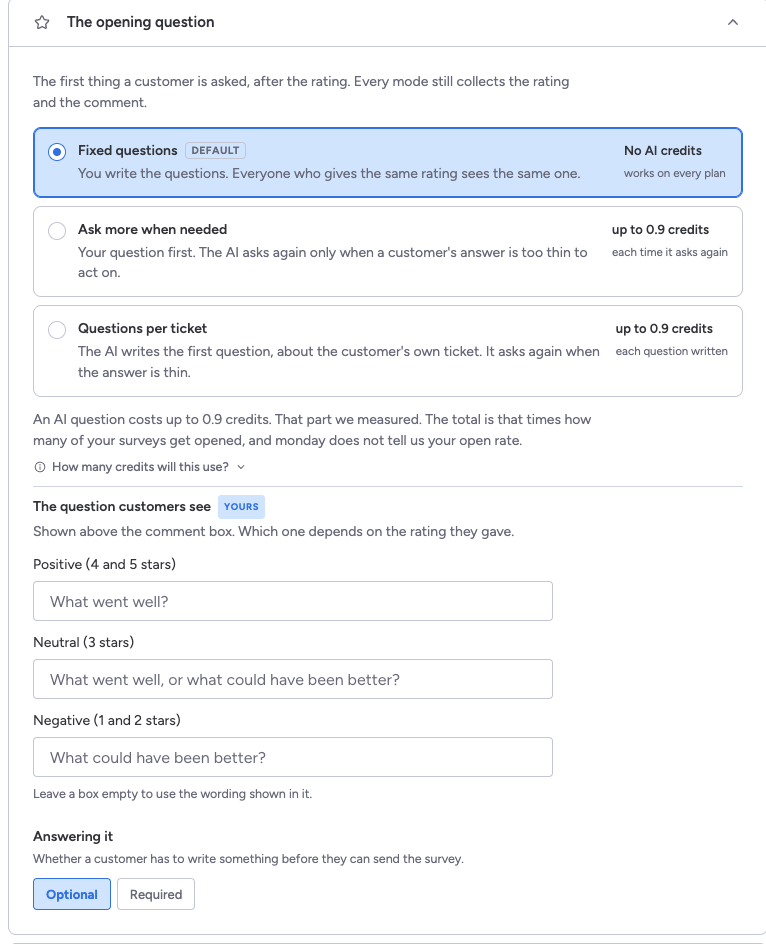
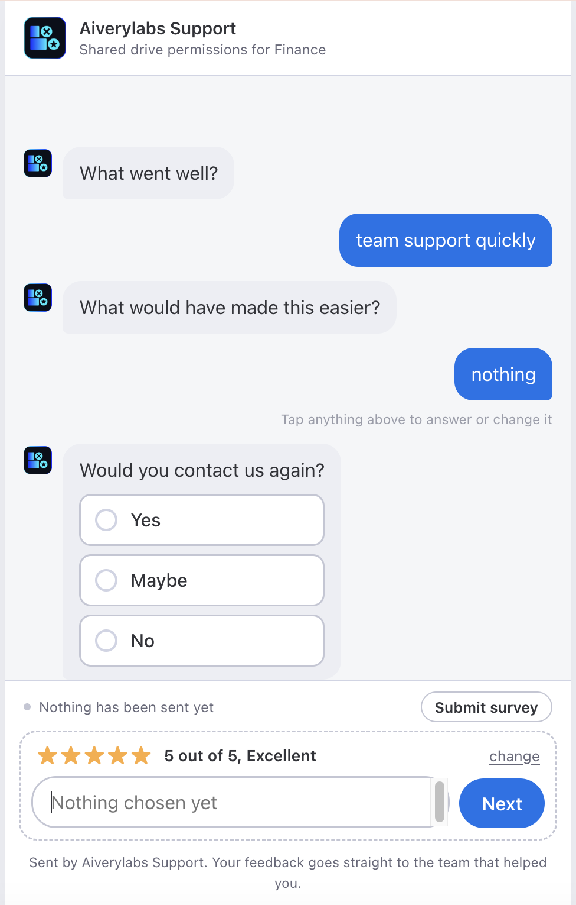
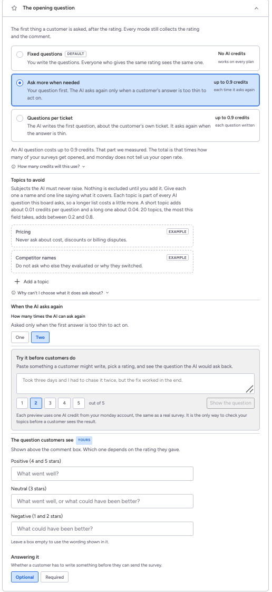
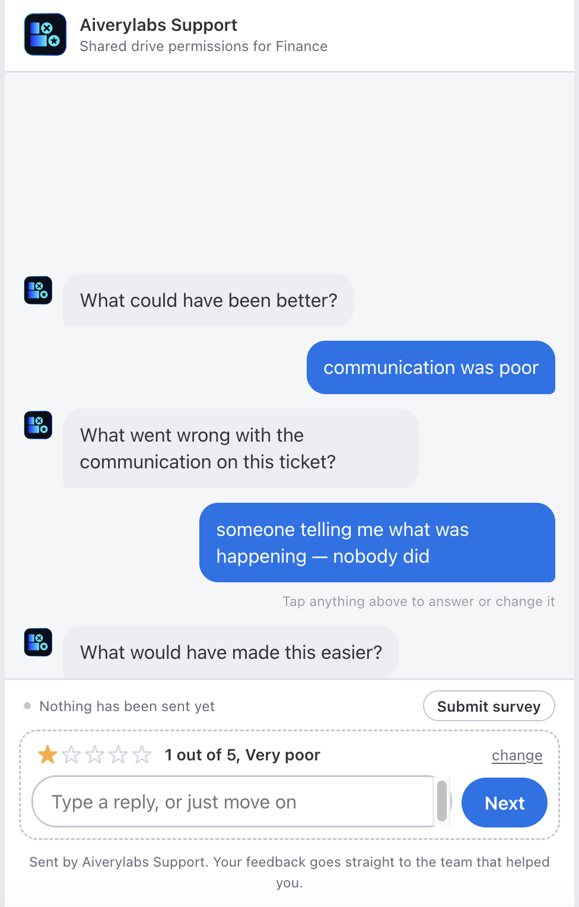
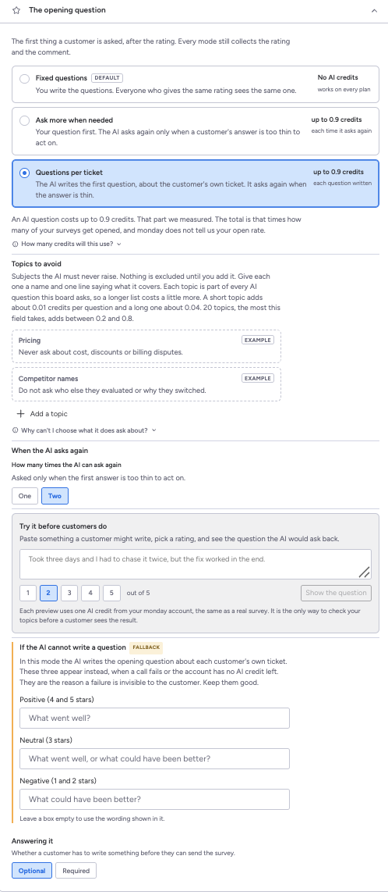
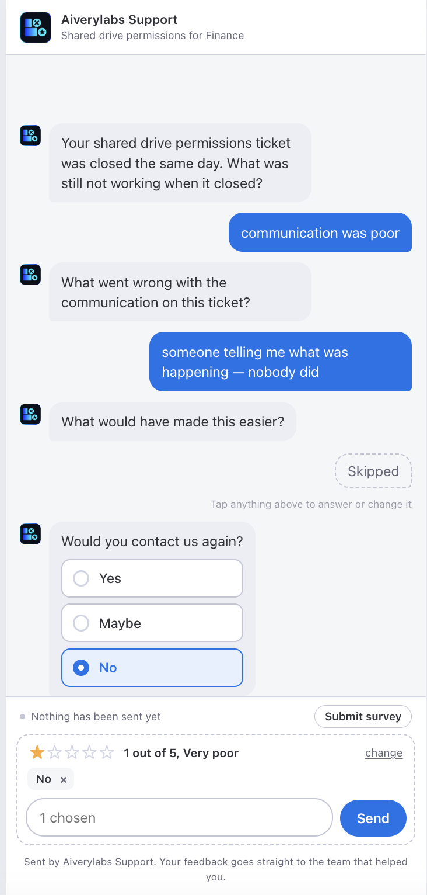
Choose what appears on the ticket
Every answer is stored either way. This setting only decides what gets written back onto the ticket itself.
Writing the score onto the ticket is worth doing. It puts the rating next to the work it refers to, so an agent opening the ticket sees it without going anywhere, and your existing board reports can group by it. The comment sits beside it.
Survey Flow creates the columns if they are not there yet. The default names are CSAT score and CSAT comment, and you can point them at columns you already have instead.
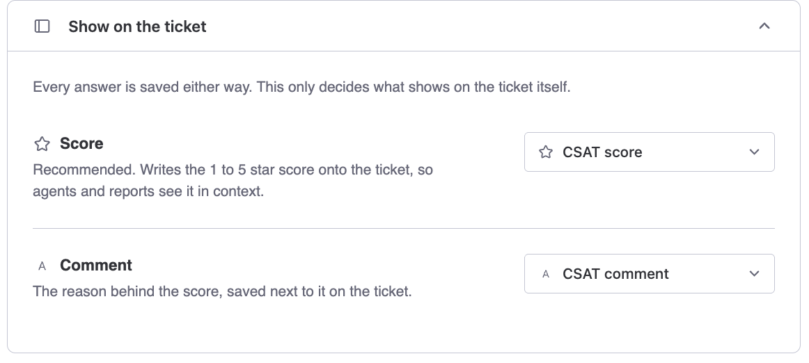
If somebody later deletes one of those columns from the board, ratings carry on being collected but stop reaching the ticket. The setup screen shows a warning naming the column that went missing. Point the setting at a different column or leave it blank, and the warning clears.
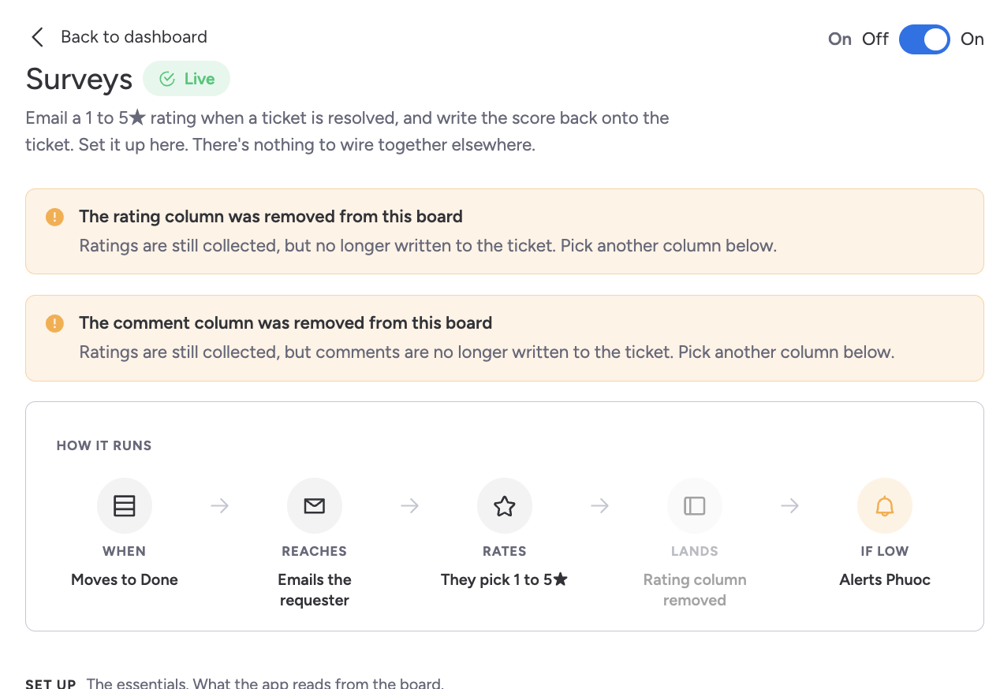
Write the email
Your customer receives an email inviting them to rate the ticket. You write the subject, the greeting and intro, and the sign off.
Three placeholders are available and get filled in when the email is sent: {{requester_name}}, {{ticket_title}} and {{ticket_number}}. Type them exactly as shown, braces included. Use them the way you would write the sentence by hand, so the message names the ticket the customer actually had rather than asking about work in the abstract.
Write it the way someone on your team would write it, because from the customer's side that is what happened. Name the ticket so they remember which conversation you mean, and keep it to a few lines.

Set the sender and the logo
The survey should look like it came from your team, not from a tool.
Display name is what the recipient sees as the sender, and it appears on the survey page too. It defaults to your monday account name, so check that the default reads the way you want a customer to see it. The logo sits at the top of the survey page and is optional. With no logo the page shows your name on its own.
The message a customer sees after they submit is set here too, alongside the display name and the logo.
Emails are sent from a fixed Survey Flow address, shown under the display name field. If your customers use strict spam filtering, that is the address to allow.
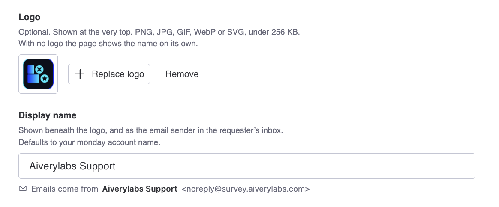
Set exclusions
Some addresses should never receive a survey. Internal staff who file tickets for other people, shared inboxes, monitoring systems, and any customer who has asked you to stop. Click Skip certain addresses in the conditions block above to add them, and Survey Flow checks the list before every send.
How to treat this list
Addresses on the exclusion list are stored as you typed them, not scrambled, so the list itself counts as customer data. Add addresses you are already holding for other reasons, and nothing more.

How long the link stays valid
A survey link expires a set number of days after it is sent, fourteen by default. You can set anything from 1 day to 90. After that the recipient sees a page telling them the survey has expired.
Fourteen days suits most teams. Shorter keeps the feedback close to the experience it refers to. Longer catches people who only clear their inbox occasionally, at the cost of ratings that arrive long after anyone remembers the ticket.
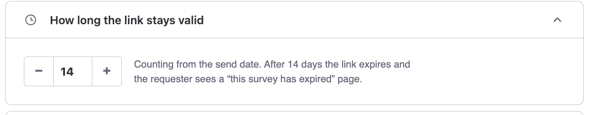
Get told about unhappy customers
A low rating is worth knowing about while there is still time to do something. Turn this on, pick the threshold, then choose who gets notified inside monday.
Two stars or below is the usual choice. One star only catches the worst cases and misses the merely disappointed. Three or below will notify you often enough that people start ignoring it.
The person you pick receives a monday notification identifying the ticket and the customer who left the rating. Choose someone who should already have access to that, and read Who can see what below before pointing this at a wide group.
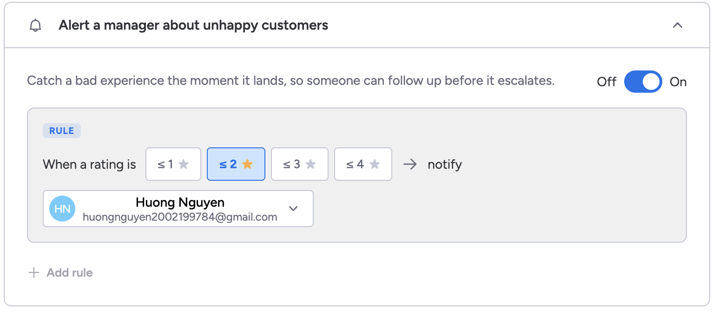
Where follow up items go
In the Act on what comes back group, the first thing is a block of its own headed Where follow-up items go: a destination board, and a group on it. It sits above the labelling section rather than inside it, and its own hint says why — you can set a destination without turning anything else on.
A follow up item is how one response becomes a piece of work somebody owns. Step 7 covers what one carries. The decision here is only where they land, and it is bigger than it looks.
Whoever can see the destination board can read what your customer wrote. That audience is the board's membership in monday.com, set by whoever administers that board, and it has nothing to do with who can open Survey Flow. Choosing a destination board is choosing an audience, so choose it deliberately rather than picking the board already in front of you.
Leave the group empty and items land in the destination board's first group. Leave the board empty and nothing can be created at all: every route that would create an item refuses, and says why.
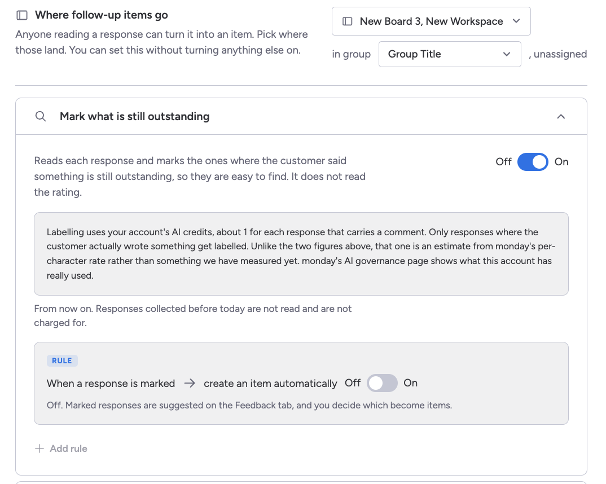
Test once, then switch it on
The on/off switch is not part of Save. It takes effect the instant you toggle it, because it is a kill switch: an admin switching surveys off wants them to stop now, not after a Save that might be refused. Everything else on the screen waits for Save changes, which reads Saved when there is nothing left to save.
Nothing sends while the configuration is off. Before you turn it on, run a single test. Put your own address on a ticket that belongs to you, move it into the trigger status, then watch the email arrive, click through, submit a rating, and confirm it lands on the dashboard. Five minutes there saves an awkward first impression with a real customer.
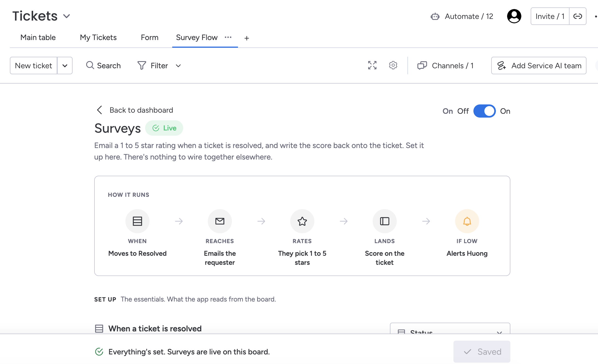
4How surveys get sent
Once a configuration is active the sequence runs without anyone touching it. An agent moves a ticket into the trigger status, Survey Flow notices, finds the address, runs its checks, and sends. Agents have no button to press and nothing to remember. That is the point.
When Survey Flow does not send
Survey Flow runs a few checks before every send, and each one is deliberate. When a survey you expected never arrived, this is the list to walk.
Something about the ticket. It was deleted, or it moved to another board, or it does not match the conditions you set. A ticket that has already been rated is never surveyed again either, which is repeat protection.
Something about the address. The mapped field is empty on that ticket, or the column you mapped no longer exists on the board at all. The address is on your exclusion list, or the customer unsubscribed. Earlier mail to that address bounced or was marked as spam, so Survey Flow stopped writing to it.
Something about your plan. You reached your monthly response limit. This one behaves differently from the rest. The survey is held rather than skipped, and you can send it once there is room. See Plans and limits.
Delivery is normally quick, though the message passes through an email provider and ordinary email delays apply.
5What your customer sees
They receive your email and click through. No account, no signup, nothing to install.
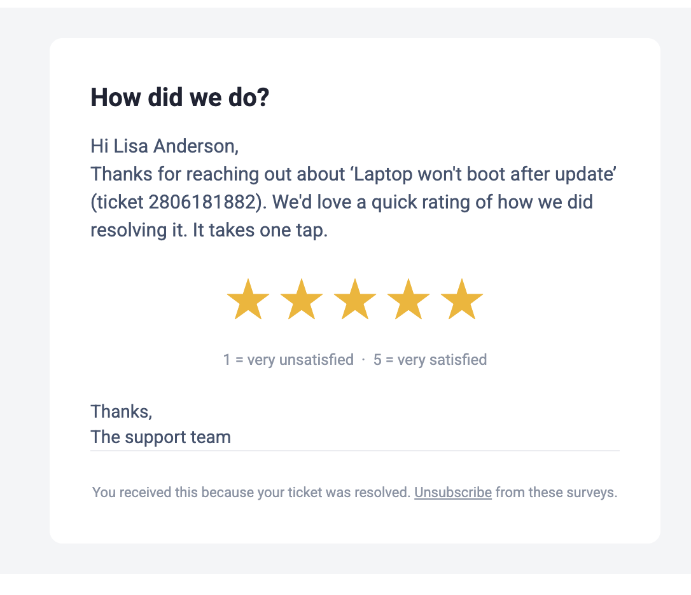
It is a conversation, not a form
This is the part most people picture wrongly, including us until recently. The survey is not a page of fields with a Submit button at the bottom. It is a thread. One question arrives, the customer answers it, their answer appears as a sent message, and the next question arrives.
The star rating comes first, and nothing else appears until there is one. If they clicked a star in your email, it is already filled in and the thread starts straight away.
After the rating, the turns come in a fixed order, and it is the same order in every mode:
- the comment question
- any questions the AI asks, if you have turned that on
- the follow up questions you configured
Your questions are always last. They are never first, and an AI question never arrives after them.
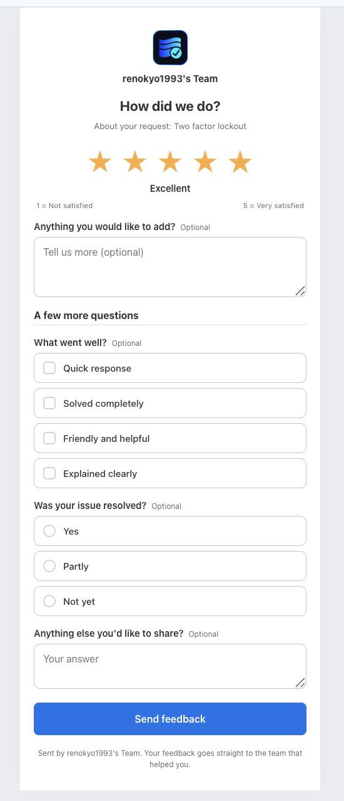
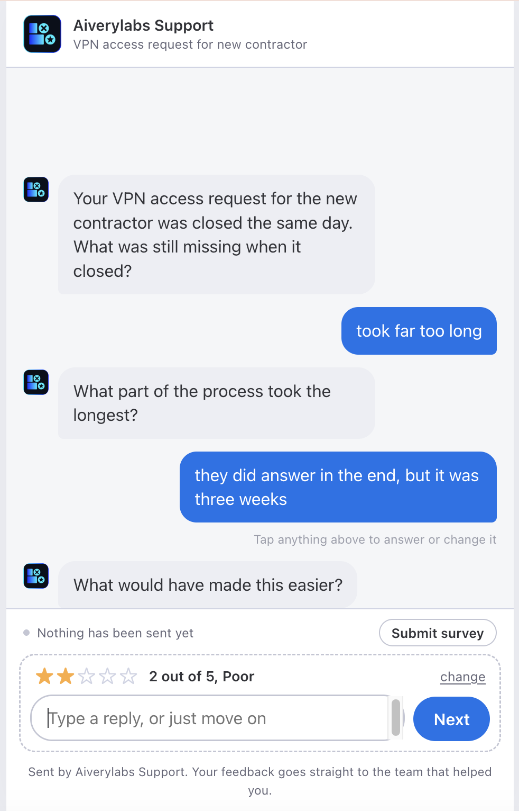
Next and Send are different buttons
The button under a turn reads Send when there is something to send, or when the question is required. It reads Next when the box is empty and the question is optional — and pressing Next skips that question.
On a required question it always reads Send. Next is a promise that the customer can move on without answering, and on a required question that promise would be false.
They can stop whenever they like
A Submit survey button is there from the first turn. The conversation is skippable, and only two things are ever required: the star rating, always, and the comment, if you ticked it required. Everything else can be left.
Design your questions on that basis. A survey that only pays off if somebody answers all of it will mostly not pay off.
An answer already sent can be reopened and changed while the survey is still open.
Changing the rating can discard answers
Questions are chosen by rating band — positive is four and five stars, neutral is three, negative is one and two. If a customer changes their rating so that it crosses into a different band after they have answered things, the questions they were asked no longer apply to them, and those answers are cleared.
They are warned before it happens. A dialog tells them how many answers they are about to lose and asks them to confirm. If they have answered nothing there is no dialog. In the mode where the AI writes the opening question, that question is regenerated for the new band.
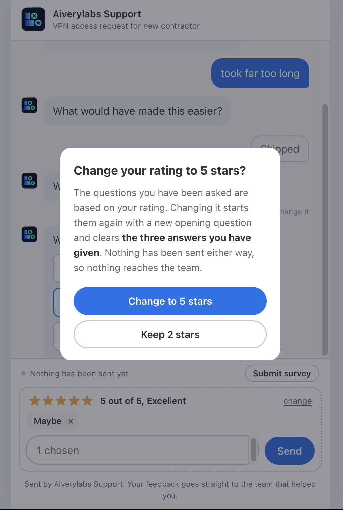
What Submit actually means
It means the rating is stored with us, durably. It does not mean your ticket has been updated.
The response is written to our database and to a lock first. If both of those fail, the customer is not shown a thank-you, because thanking somebody for feedback that was lost is worse than showing them an error. Only once it is safely stored does everything else happen: the score onto your board column, the comment onto its column, each follow up answer onto its column, and the low rating notification. Those are deliberately best effort and cannot fail the submit.
So a customer can be thanked while a write to your board quietly failed. That is the trade, chosen on purpose, and a reconcile job is the backstop. If a rating shows in Survey Flow but never reached the ticket, this is one of the two reasons; the other is a column that no longer exists, in Choose what appears on the ticket.

Where a link can land instead
The thank-you is one of nine endings. A customer can also reach: expired, past the lifetime you set; already rated; withdrawn; superseded, meaning a newer survey exists for that ticket; unavailable; paused, because surveys are switched off; an invalid link; and a general error. Each is its own screen with its own wording rather than a shrug.
Repeat protection
Repeat protection starts when somebody rates. Until then there is none, and that is worth knowing before you design a workflow around it.
A ticket nobody has rated is surveyed again every time it reaches the trigger status. Move it from Done to Reopened and back to Done twice in an afternoon and the customer gets two emails. If your team reopens tickets often, either use a status that only gets set once or expect the extra sends.
Once a customer has rated, that ticket is never surveyed again, with no time limit at all.
Opting out
Every survey email carries an unsubscribe link. A customer who uses it receives no further surveys from you, on any board.
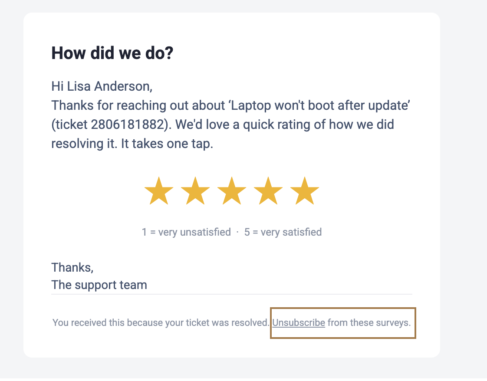
6Read your results
Open Survey Flow from the board to see the ratings collected there. It has four tabs. Overview is the overall score and how it is moving. Feedback is every individual response with what the customer wrote. Team breaks the ratings down by the agent who handled each ticket. Delivery lists every survey sent in the period, who it went to, and whether it was answered.

The written comments are usually where the value sits. A score tells you something changed. A comment tells you what to do about it.
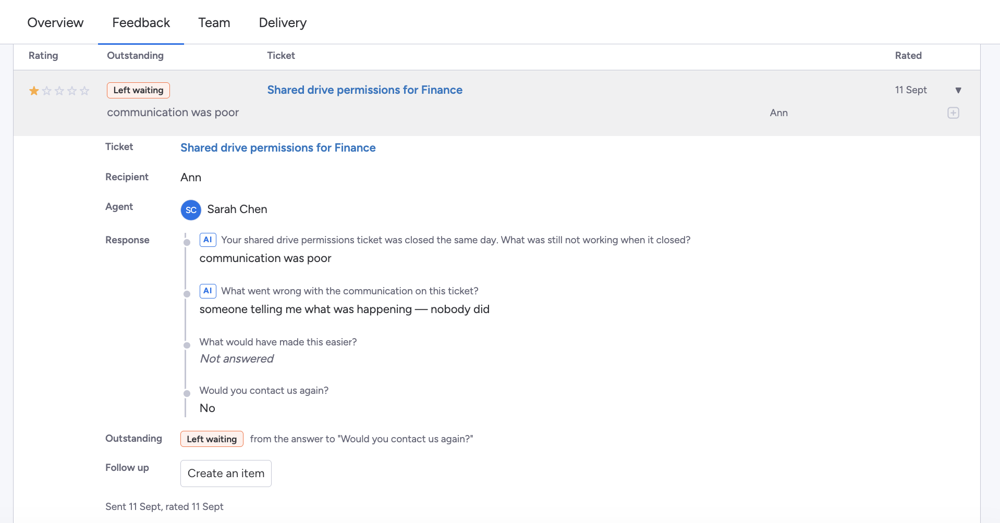
A response on the Feedback tab can also be turned into a follow up item on a board, which is where step 7 picks up.
Results can be read for the team as a whole and broken down by the agent who handled each ticket, so agents can see feedback on their own work.

Delivery is the tab to open when you are chasing one particular survey rather than reading the numbers. Two actions live there, and both are limited to account admins and board owners.
A survey nobody has answered can be resent. That is the one to reach for when the address was wrong at the time, or the mail never arrived.
A survey that has been answered can have its feedback deleted. That clears the rating, the comment and the answers from the dashboard and from the ticket, and it returns the ticket to unsurveyed, so it can be surveyed again the next time it resolves.
If one of those columns is no longer where the setup expects it, the delete still goes through and the dashboard is cleared, but some of what was written to the ticket may remain. The confirmation tells you when that has happened, so open the board and check, since an old column may still be holding the text. See Choose what appears on the ticket, which covers the same missing column and how to stop it happening again.
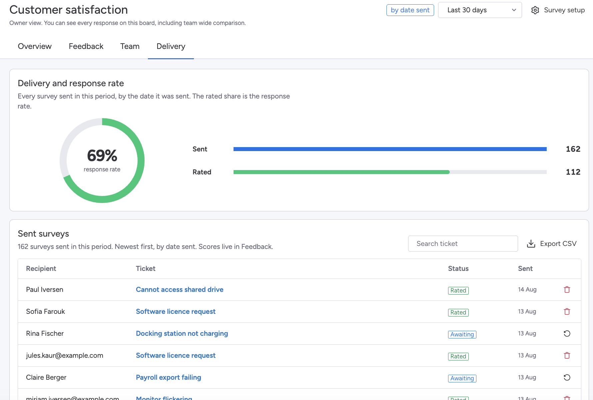
Deleting feedback cannot be undone
There is no recovery step. The rating and whatever the customer wrote are gone from the dashboard and from the ticket, and the only way to hear from that customer again is for the ticket to resolve and be surveyed afresh. Restricting it to account admins and board owners is the whole safeguard, so be sure before you confirm.
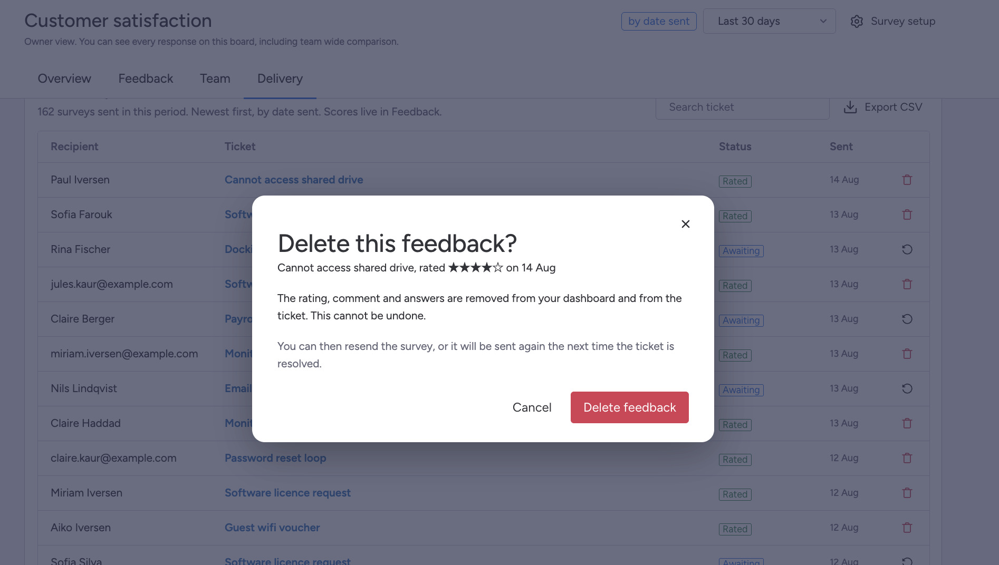
The CSV export sits on the same tab. It is how you take your history out of Survey Flow, whether for a report of your own or before uninstalling.
Reading small numbers
In the first weeks you will have few responses, and one unhappy customer swings the average hard. Treat early numbers as a signal that the mechanism works, not as a verdict on the team.
7Act on what comes back
Ratings arrive on their own. Turning one into work somebody owns is the part that takes a decision, and there are two pieces for it: labels saying what is outstanding, and follow up items that put a response onto a board.
Outstanding labels
Responses can be marked with labels saying what is still outstanding, which is what lets you separate the ones needing action from the ones that are merely low. There are two, and you do not write them yourself: a response can be marked as not resolved, or as left waiting.
Those labels come from labelling, the second AI switch mentioned in step 3, and it is off until an admin turns it on. It runs once a survey has been submitted, with nobody present, and it sends the ticket title, the days to close, the rating, the comment and every answer, all exactly as written. Leave it off and follow up items are simply something you create by hand from a response you have read.
Follow up items
Three routes create one: a rule that fires on its own, a button on the Feedback tab, and the Sidekick skill in step 8. All three land in the destination you set in step 3.
The item's name is the label followed by the ticket title, so the ticket title shows up in board views, in search and in notifications.
The item's update carries the rating and the date it was given, the labels still outstanding, the customer's comment exactly as they wrote it, and every follow up question that was answered together with its answer. No customer email address is included anywhere in it.
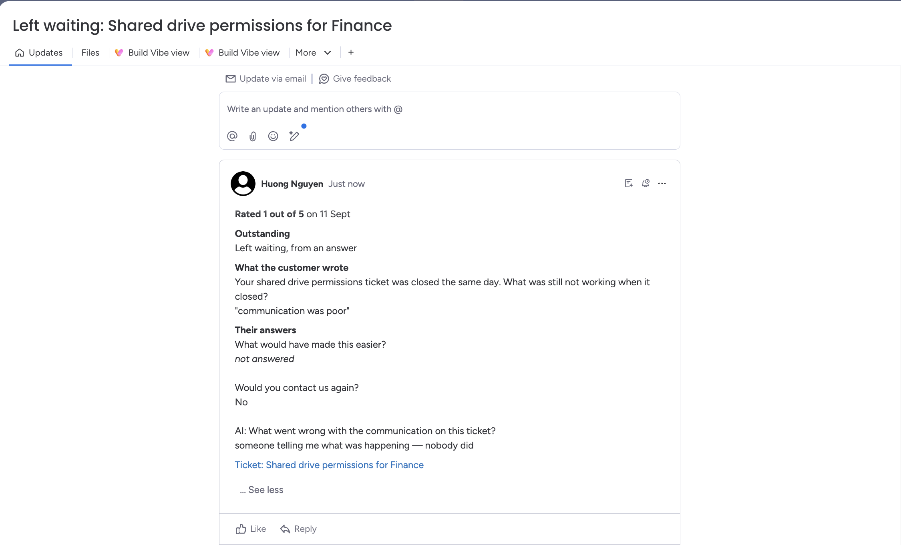
Who reads it is the destination board's membership, which is the choice made back in step 3 and the reason that setting deserves a moment.
They stay after you uninstall
Nothing in Survey Flow deletes a follow up item, at uninstall or at any other time. They are items on your board, like a task somebody wrote by hand, and they stay there with the comment inside them until someone on your team removes them. See Before you uninstall.
8Ask Sidekick about your feedback
Survey Flow publishes two skills to monday.com's Sidekick assistant. One finds feedback: ask it what customers said about a ticket, or name a ticket and it will find it. The other creates a follow up item from a response, into the same destination you set in step 3.
The difference from everything else in this guide is worth stating plainly. These are not gated on a setting. There is no switch to leave off. Anyone who can invoke the skill reaches them, which means an account admin or a board owner.
The finding skill returns, for each response it matches, the customer's comment exactly as written, the follow up answers, the score, the ticket title, a date, and the display name of the agent who handled the ticket. Sidekick writes its reply out of that material, and the reply lands in a chat transcript. How long that transcript lives, and who else can read it, is monday.com's to answer rather than ours.
If that is more exposure than suits your team, the lever is who holds admin and board owner rights, not a setting inside Survey Flow.
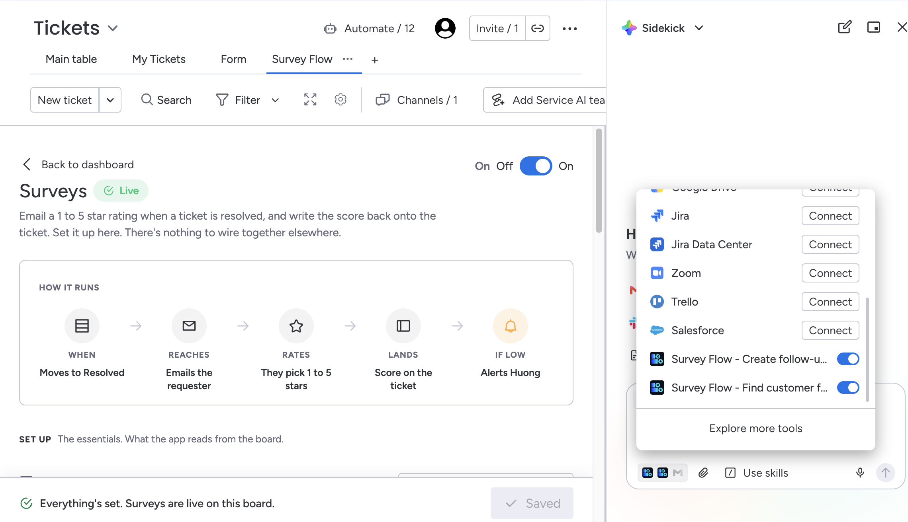
Plans and limits
Survey Flow is sold through monday, on four plans. What you are paying for is responses, not seats and not surveys sent. Starter includes 25 responses a month, Pro 150, Business 750, and Scale 3,000. There is a 14 day trial, metered against Starter's allowance of 25 responses, so whichever runs out first ends it.
The month is a UTC calendar month, and the count resets at midnight UTC on the first. That can sit a few hours away from the dates monday shows you elsewhere. If your allowance resets slightly earlier or later than you expected, that is why.
Reaching the limit stops receiving, not just sending
This is the part nobody expects. Hitting your monthly limit stops Survey Flow sending, which is no surprise. It also stops it accepting answers. A survey already sitting in a customer's inbox will not take their rating until the month rolls over or you upgrade. The customer sees a page thanking them, saying the survey is not accepting responses right now, and telling them the link stays valid so they can try again in a few days.
The link is not broken and nobody needs a new one. Nothing you have already collected is lost, there is nothing to repair by hand, and the same link starts working again on its own.
Plan and usage
The Plan and usage screen lives in your monday account settings rather than on a board, because it covers the whole account rather than one configuration. It shows how many responses you have used this period, when the count resets, which plan you are on, and anything currently held. When surveys have stopped and you want to know why, this is the screen to open.
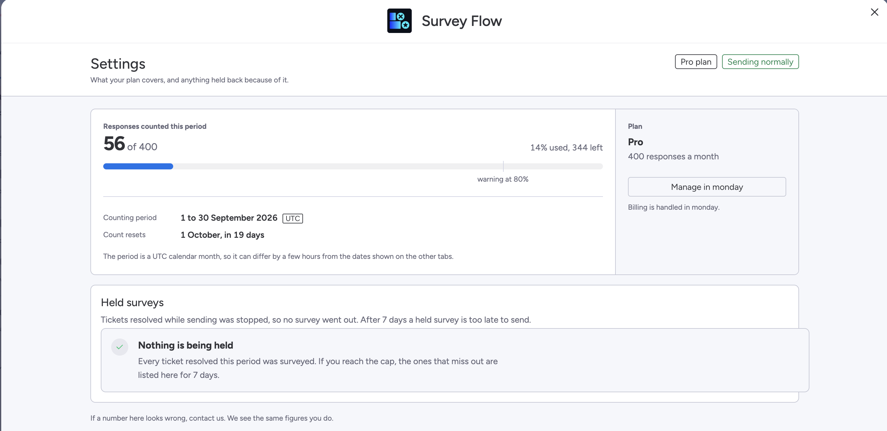
Held surveys
Tickets that resolve after you reach the limit are not thrown away. They are held, and they are listed on the Plan and usage screen. Once there is room, because the month rolled over or because you upgraded, an admin can send them.
A held survey stays sendable for 7 days after the ticket resolved. After that it cannot be sent at all, because a survey arriving three weeks after the work is worse than no survey. The held record itself is kept for at least 60 days.
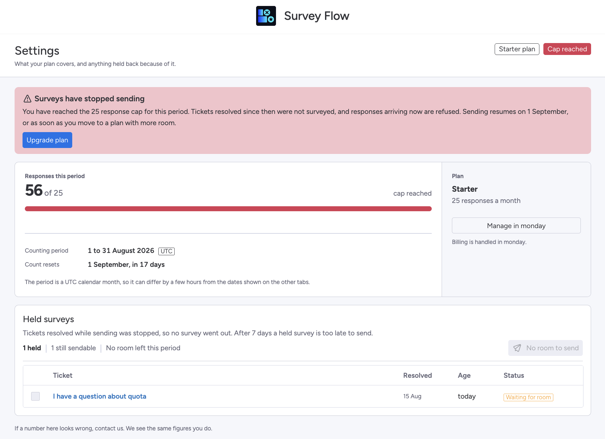
The usage warning
At 80 percent of your limit a warning appears on the board dashboards, so you hear about it with room to act rather than after sending has stopped. You can dismiss that one. At 100 percent it changes to say sending has stopped, and that one cannot be dismissed, because at that point something is actually wrong.
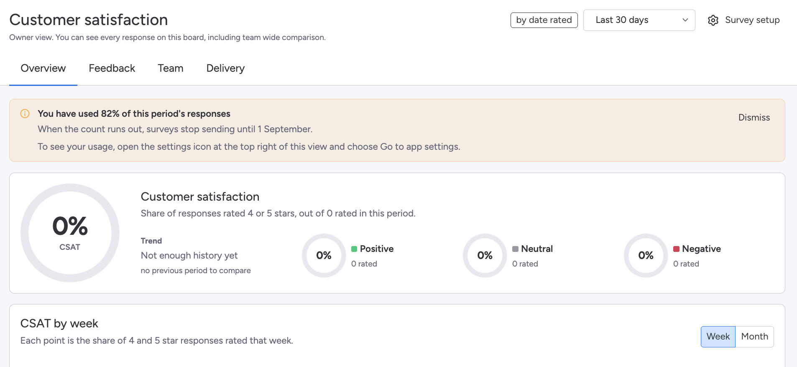
Who can see what
Decide this before you switch a configuration on rather than after, because it changes who inside your company sees customer contact details.
Agents see which customer left a response on the tickets they handled. Account admins and board owners see it for the whole board. Where a display name exists, the display name appears. Where Survey Flow holds only an email address, the email address appears.
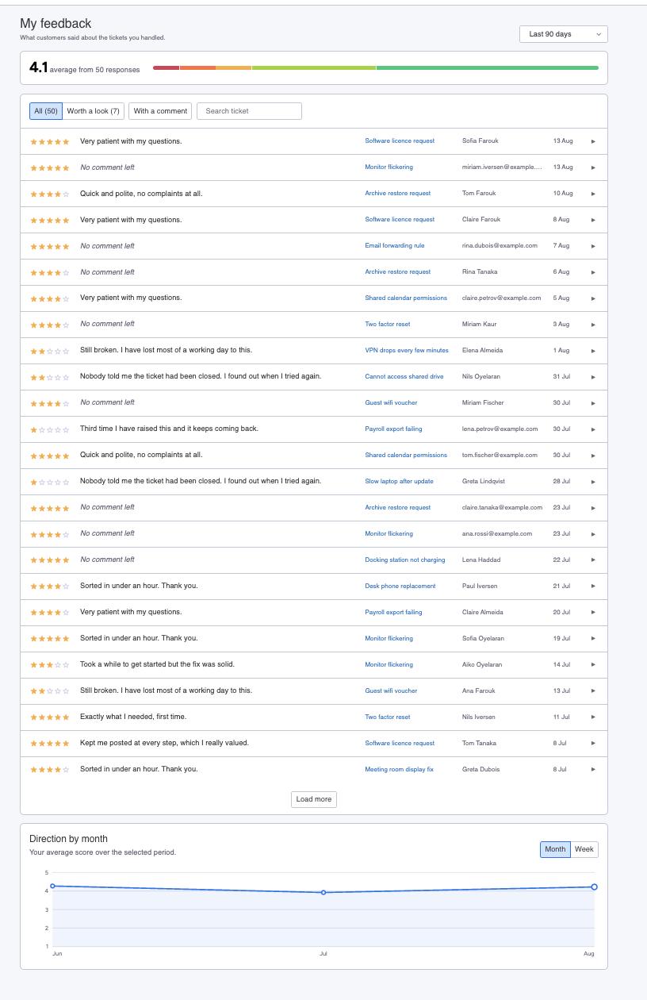
That is what makes per agent feedback useful, and it is also more exposure than some teams want. If it does not suit yours, raise it with us before rolling Survey Flow out to the whole desk.
The same applies to low rating alerts. Whoever you nominate receives the customer's identity in a monday notification, whether or not they ever open Survey Flow.
A follow up item is read by the destination board's members. That audience is set on the board, by whoever administers it, and is unrelated to who can open Survey Flow. The comment goes onto the board word for word. See Follow up items in step 7.
A Sidekick answer lands in a chat transcript. It is composed from customer comments and the agent's display name, and where it goes afterwards is governed by monday.com rather than by us. Any admin or board owner can ask for one. See step 8.
Privacy in brief
Survey Flow handles your customers' email addresses and whatever they write in a survey, so here is the short version. The full detail, including every sub processor, retention period, and what happens when you uninstall, is in the privacy policy.
Survey data is stored outside monday.com in a managed Postgres database, encrypted at rest and in transit. Email is sent through a third party email provider.
Four points sit here rather than buried in the policy, because they tend to surprise people.
- Agents can see customer identities on their own tickets, and admins and board owners across the board, including raw email addresses where no display name exists, as described above.
- When someone unsubscribes, Survey Flow keeps a scrambled version of their address so it can keep honoring that request. Deleting it outright would mean forgetting that they asked you to stop.
- If you turn on AI questions or labelling, comments are sent to monday.com's AI. If you leave them off, they are not. The policy sets out what each one sends.
- A follow up item copies the comment onto a board of your choosing, where a different set of people can read it and where it stays after you uninstall.
Before you uninstall
Uninstalling does not delete your data that day. It starts a seven day clock. Your configuration and the responses you have collected are kept for those seven days, and if you reinstall inside the window they come back: your questions, your branding, your exclusion list, and the ratings and comments already collected. Let the window close and they are deleted. A few things do go immediately, and the policy lists them.
Export anyway, before you uninstall rather than after. Seven days is not long, and an export is yours to keep regardless of what happens to the account. Open Survey Flow from the board and use the CSV export on the Delivery tab.
Three things stay behind, all on purpose.
- The scrambled version of an unsubscribed address, because forgetting it would mean emailing somebody who has already asked you to stop. That is the record described in Privacy in brief above.
- What Survey Flow wrote onto your tickets, such as a rating column. The board is yours; uninstalling clears what Survey Flow holds, not what it wrote to monday.
- Follow up items, permanently. Nothing deletes them, and the customer's comment is inside the item's update. They are work created on your own board, so they are yours to remove if you want them gone. See Follow up items.
The privacy policy gives the full account, including the case where some of your configuration can survive inside your own monday account.
Get help
Email support@aiverylabs.com, or open a request at our support portal.
Include your monday.com account name, the board, the ticket that did or did not behave as expected, and roughly when it happened. That is usually enough for us to find it.